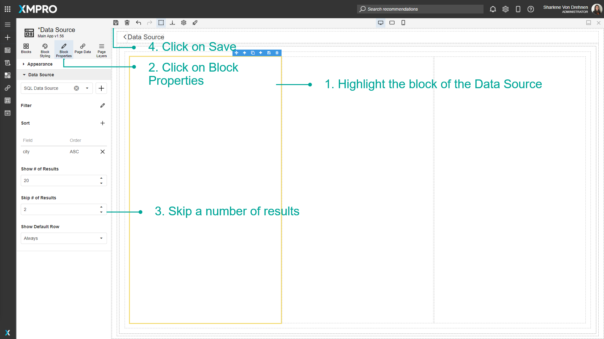
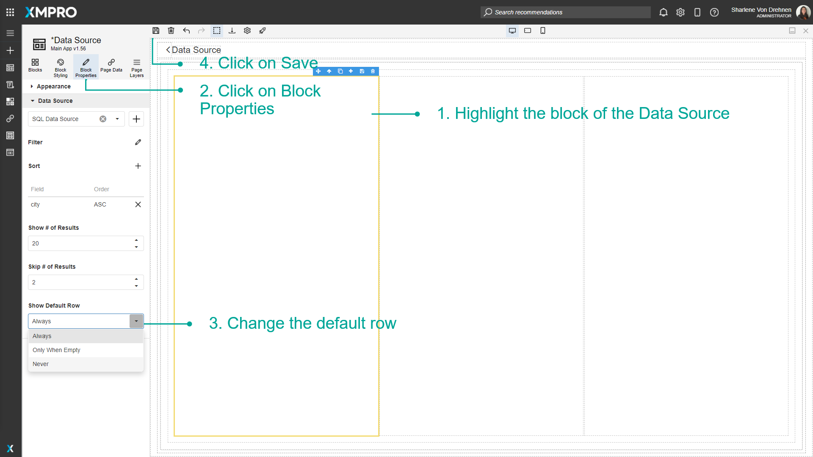

Use Data Sources in the Page
Once a Data Source has been added to a Page, it can be used on a number of Blocks. Data Sources can be bound to certain Blocks that allow you to store data or display data, such as a data grid. These can be used if you want to display data in a grid view to the user, or if you want the user to enter some details and have it stored directly into the connected Data Source, such as an SQL Server Database.
Note
It is recommended that you read the article listed below to improve your understanding of Data Integration.
Adding a Data Source to a page
To add a Data Source onto the Page of an Application, follow the steps below:
- Open the Editor for the Application.

- Drag a Block that can display data, such as a Data Grid.
- Highlight the Block that you want to bind the Data Source to.
- Select Block Properties.
- Select a Data Source from the list.
- Click on Save.
The block highlight color will change to yellow to show it has a Data Source. Click on Launch to launch the Application and view the data.

Note
If the Data Source is properly configured, the data will display and can be visible when the app is launched.

Filtering records from a Data Source
To filter and limit the number of records the Data Source displays, follow the steps below:
- Open the Editor for the Application.

- Highlight the block of the Data Source you want to filter.
- Click on the edit button to Filter.

- Add a filtering condition or group.

- Click on Apply.
- Click on Save.
Sorting records from a Data Source
To sort the records the Data Source displays, follow the steps below:
- Open the Editor for the Application.

- Highlight the block of the Data Source you want to sort.
- Click on the plus button to add a new field to sort by.

- Sort the field in ascending or descending order.
- Click on Save.
Showing specific records from a Data Source
Show # of Results
To show a limited number of the records the Data Source displays, follow the steps below:
- Highlight the block of the Data Source.
- Click on Block Properties.
- Show the number of results.
- Click on Save.

Skip # of Results
To skip certain rows, follow the steps below:
- Highlight the block of the Data Source.
- Click on Block Properties.
- Skip a number of results.
- Click on Save.

Show Default Row
To change the settings for the default row, follow the steps below:
- Highlight the block of the Data Source.
- Click on Block Properties.
- Change the default row.
- Click on Save.

Last modified: May 28, 2025